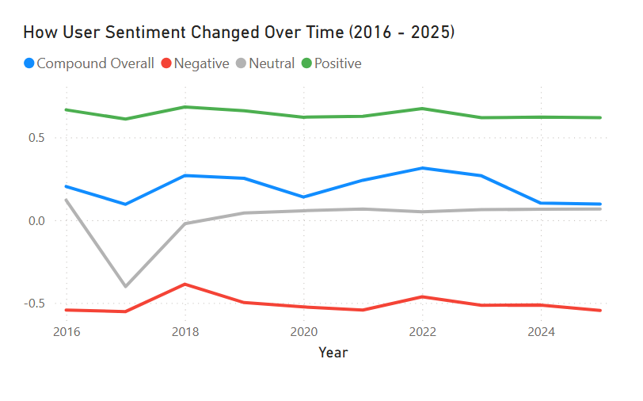
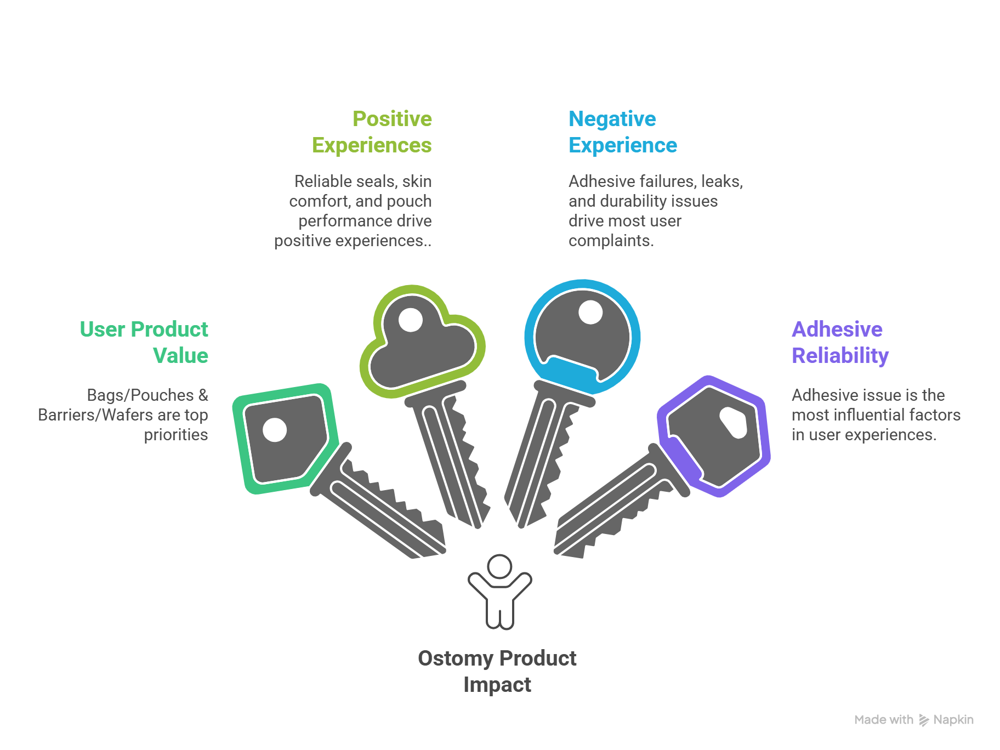
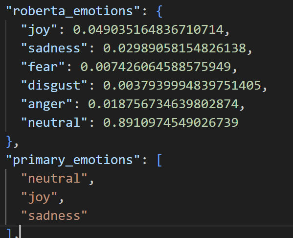

Top concern (both brands)
Leakage & seal reliability
Patient Experience Analytics
Patient sentiment, emotions, product pain points, and brand comparison from Reddit and UOAA ostomy care discussions.
Use this page to explore patient feedback insights from Reddit and UOAA—scroll down for charts, comparisons, and recommendations.
Quick headlines across both brands and both platforms—see labeled charts below for Hollister vs Coloplast and Reddit vs UOAA.
Top concern (both brands)
Leakage & seal reliability
Positive driver (both)
Comfort · wear time · reliability
Negative driver (both)
Adhesive failure · irritation
Compared brands
Hollister vs Coloplast
Main output
Pain points & opportunities
Patient voice
Each chart is labeled with company and data source—nothing is blended unless marked “combined.”
Source: Reddit merged CSV · n=1,345
Source: Reddit merged CSV · n=1,360
Source: UOAA results JSON · n=1,210
Source: UOAA results JSON · n=982
Relative negative-impact index · Hollister topic & attribute analysis
Relative negative-impact index · presentation & qualitative themes
Optional: combined snapshot
All brands · Reddit + UOAA · volume-weighted (use only for a single overall picture)
Key takeaways (by brand & platform)
Brand insights
Reddit merged CSV sentiment · themes from NLP outputs.
Reddit n=1,345 · 48.9% positive
Positive drivers
Negative drivers
Reddit n=1,360 · 56.7% positive
Positive drivers
Negative drivers
Brand comparison
Presentation branded Reddit subset for sentiment bars · attribute index illustrative.
Sentiment comparison (%)
Hollister n=1,245 · Coloplast n=1,334 (presentation)
Attribute strength (positive index)
Strengths & pain points
| Dimension | Hollister | Coloplast |
|---|---|---|
| Top positive | Performance & reliability | Seal / leak prevention |
| Top negative | Adhesive / barrier | Leaks & blowouts |
| Skin | Mixed; adhesive-linked | Comfort; some irritation |
| Reddit positive % | 50.5% | 56.5% |
What this means
Coloplast is discussed more positively on Reddit in the branded subset, with a lower negative share.
Hollister carries more adhesive and barrier-related criticism, while maintaining strengths in reliability and support themes.
On UOAA, Coloplast appears more polarizing (higher positive and higher negative vs Hollister in presentation summary).
Negative attribute impact
Channels
Broader public reactions, faster discussions, and candid product complaints or recommendations across subreddits.
Deeper support-style threads, detailed patient experiences, and problem-solving around fit, adhesives, and daily life.
Positive sentiment % by platform
Repo aggregates · Hollister vs Coloplast
Product attributes
Which product features are commonly associated with patient praise or frustration.
Attribute role tags (Hollister index)
Green = positive driver · Orange = negative · Purple = mixed
Emotional context
Sentiment is polarity; emotion is the lived reaction—frustration after a leak, relief when a product works.
Emotion profile comparison
Illustrative % aligned with presentation · TODO: aggregate RoBERTa from UOAA JSON
Recommendations
Evidence
Positive, neutral, and negative share side by side.
Coloplast: higher positive, lower negative in branded posts.

Leading positive and negative Hollister drivers.
Adhesive failure dominates negative mentions.

Hollister Reddit polarity over time.
Positive share increases; negative stays relatively low.

Stakeholder-ready reporting from NLP outputs.
Filters and trends without reading raw JSON.